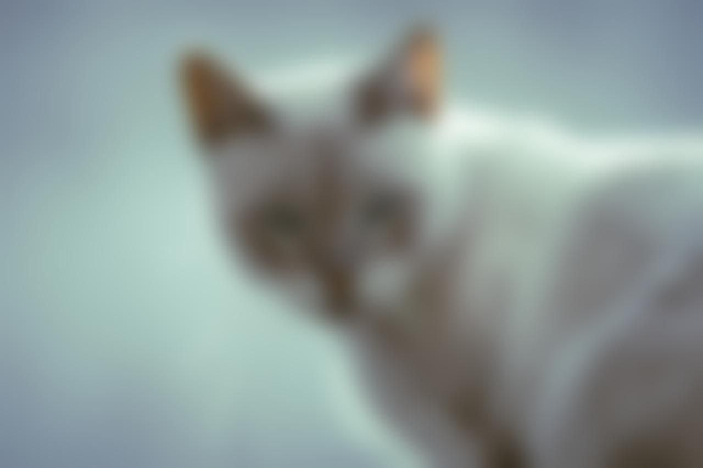
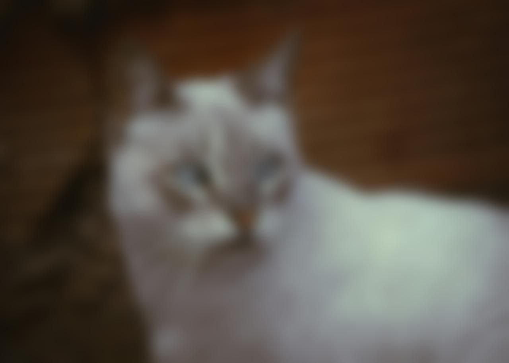
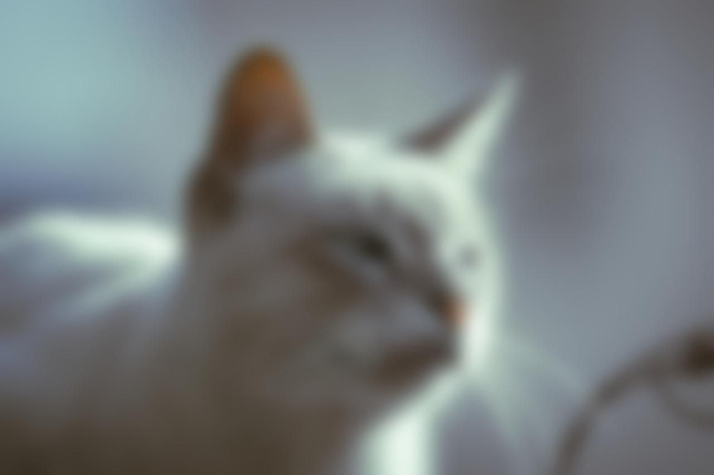

تتمتع القطة بجمال ساحر يجمع بين الرقة والشراسة فُرْوَها ناعم كالحرير، يميل لونها إلى الأبيض الناصع مع لمسات رقيقة من الرمادي الفاتح، مما يضفي عليها مظهراً أنيقاً عيناها زرقاوان واسعتان تعكسان ذكاءً وفضولاً، وتبدو وكأنها تحمل في أعماقها أسراراً لا حصر لها أنفها وردي صغير يضفي لمسة من الرقة على ملامحها، وأذناها قائمتان وكبيرتان، مما يعزز انطباعنا بانتباهها الدائم لما يدور حولها تعبير وجهها هادئ ومتأمل، وكأنها تفكر في مغامرتها القادمة
  